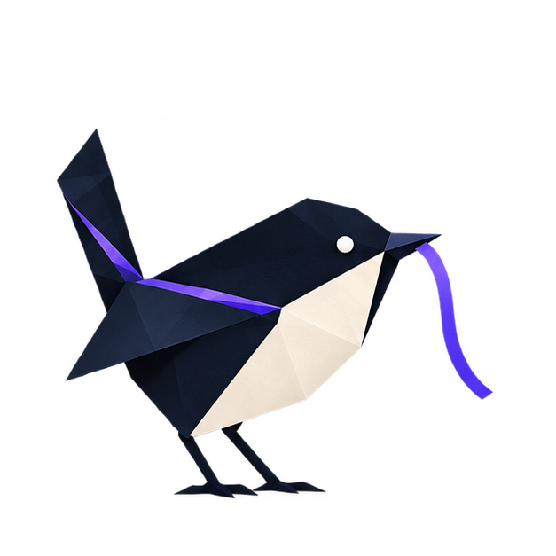

Intent
Living specs
Describe expected behavior and keep changes in product intent visible to the people implementing and reviewing them.

AW separates current intent, decision history, reusable lessons, and local work-in-progress. Mechanical checks answer narrow questions about those records. People still judge the assumptions and consequences behind a change.
Read the overview of software continuity →A system's working theory is exercised by people who understand its problem, history, and consequences. Documents and code can support that work. They cannot settle every question or absorb accountability on their own.
Evidence that gives a future contributor a better starting point for interpretation and judgment.
Meaning, tradeoffs, and responsibility. A team still has to decide whether an old decision applies, whether a requirement is complete, and whether a change protects what matters.
Putting every kind of context into one undifferentiated note makes it harder to evaluate. The model separates what is current, what was decided, what was learned, and what was checked.
Describe expected behavior and keep changes in product intent visible to the people implementing and reviewing them.
Record why a consequential choice made sense at the time, including the context a later decision may revisit.
Preserve a validated lesson when the same misunderstanding would otherwise return in a later task or session.
Show what was tested, reviewed, or inspected so confidence can be understood and challenged in context.
The shape is a loop because each meaningful change can reveal something that needs to be clarified, corrected, or preserved for the next one.
Bring current intent and relevant history into view before choosing an approach.
Make the smallest justified change and record assumptions that affect its meaning.
Compare behavior with a useful reference and inspect assumptions, boundaries, and consequences.
Update living intent, preserve a decision, or retain a learning when the work earned one.
Leave the next contributor enough evidence to begin with a clearer theory of the system.
When the experience is uncertain, aw-spec makes the agent's interpretation tangible enough for people to question:
Routine changes with clear intent need no prototype. If someone declines a suggestion, continue authorized work with the uncertainty explicit.
A receipt validator can accept a recent, correctly shaped record. It does not independently observe the review. Freshness checks and trace links narrow the questions a person must investigate; they do not establish quality.
Hearing water running is a clue that someone washed their hands; it is not a complete account of what happened. Treat workflow records with the same care. A test-runner result tied to a revision carries different weight from an agent’s unsupported summary. Checks also need enforcement where they cannot quietly be skipped. Read the essay on deterministic checks.
Agents are useful when their work can be connected to current intent, prior reasoning, and observable checks. That connection gives reviewers something concrete to inspect and gives an agent a way to expose what it could not determine.
A temporary checkpoint and a lasting lesson answer different questions. Keeping them separate helps a useful note avoid becoming a stale instruction.
Capture the assumption behind a repeated correction, the situation where it applies, and a check that could prevent a recurrence. Keep its source and rationale. Revisit it when the repo changes; repetition alone does not make a claim reliable.
Record the goal, finished and unfinished work, rejected approaches, checks and their revision, and the next action. On resume, compare the note with the branch and working changes. AW’s checkpoint is local and git-ignored; moving it to another checkout requires an explicit transfer.
Session logs and a short context wiki help contributors find their way to durable records. A summary can lose qualifications; correctness-critical requirements belong in the specification or decision itself. Logs must be captured for synthesis to have anything to work from.
Choose review depth by the cost of undoing a mistake. Existing behavior can provide a reference for a rewrite; a new architectural decision may need someone who understands the system.
Establish the covered behavior on the old revision before changing the implementation.
A passing pin means the new version matches the old on the observations checked. It does not establish complete equivalence, sufficient coverage, or that the old behavior was correct. Deliberate behavior changes need explicit new expectations.

Augmented Workflow is designed for teams that want software to remain explainable as contributors, requirements, and tools evolve.
Return to the overview